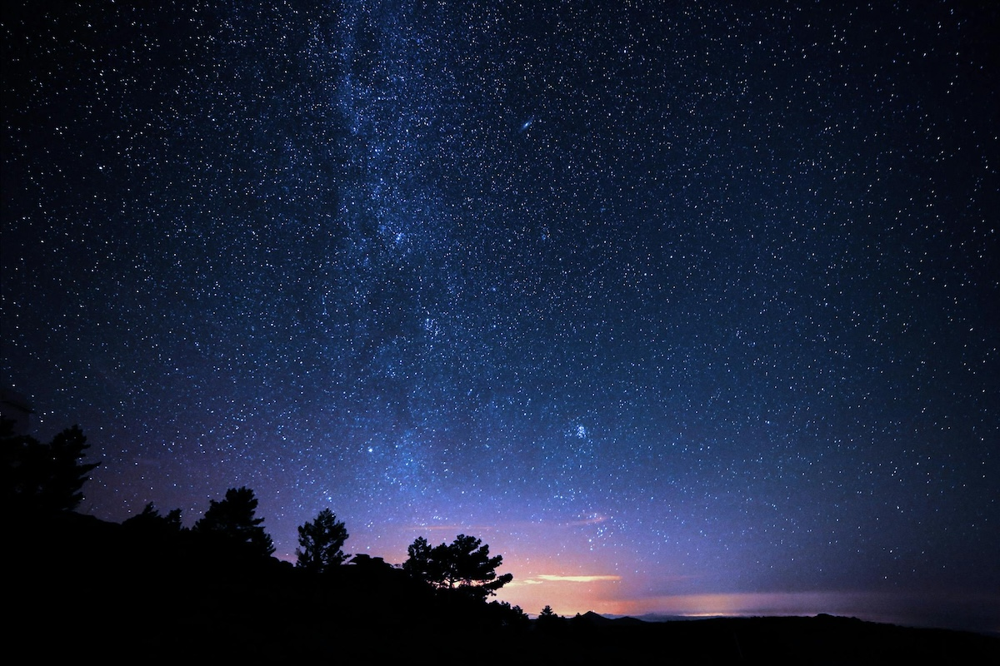

Gece Fotoğrafçılığı: Yıldızlı Gökyüzünü Nasıl Çekersiniz?
Gece fotoğrafçılığı, büyüleyici ve zorlu bir dünyayı keşfetmek isteyen fotoğraf tutkunları için büyük bir ilham kaynağıdır. Yıldızlı bir gökyüzünü kaydetmek, sabır, teknik bilgi ve yaratıcılık gerektirir. Bu yazıda, yıldızlı gece fotoğrafçılığına dair temel ipuçlarını ve dikkat edilmesi gereken noktaları ayrıntılı bir şekilde ele alacağız.
1. Ekipman Seçimi
Gece fotoğrafçılığında doğru ekipman, başarınızın anahtarıdır.
- Kamera: Mümkünse manuel ayarlar sunan bir DSLR veya aynasız kamera tercih edin. Daha büyük sensöre sahip kameralar, gece çekimlerinde daha az gürültü oluşturur.
- Lens: Geniş açı ve düşük diyafram değerine sahip bir lens (f/2.8 veya daha geniş) yıldız detaylarını yakalamak için idealdir. 14mm veya 24mm gibi geniş açı lensler, daha fazla gökyüzü alanı yakalamanıza yardımcı olur.
- Tripod: Sabit ve dayanıklı bir tripod, uzun pozlama sırasında bulanıklığı önler. Hafif bir rüzgârda bile sallanmayan modelleri tercih edin.
- Uzaktan Tetikleyici: Deklanşöre dokunmadan fotoğraf çekebilmek için kullanılır. Alternatif olarak, kameranızın zamanlayıcı modunu da kullanabilirsiniz.
2. Lokasyon ve Zamanlama
Gece fotoğrafçılığında lokasyon ve zamanlama, başarılı bir çekim için kritik öneme sahiptir.
- Işık Kirliliği: Mümkünse şehir ışıklarından uzak, karanlık bir alan seçin. Bunu tespit etmek için Light Pollution Map veya Dark Sky gibi uygulamaları kullanabilirsiniz.
- Ay Durumu: Yeni ay dönemleri, yıldızları daha net bir şekilde görebilmeniz için idealdir. Dolunay ise gökyüzünü fazlasıyla aydınlatıp yıldız detaylarını gizleyebilir.
- Hava Koşulları: Bulutsuz ve açık bir hava, yıldız fotoğrafçılığı için şarttır. Rüzgârın az olduğu geceler de çekim kalitenizi artırır.
- Saat Dilimi: Mümkünse gece yarısından sonraki saatleri tercih edin. Bu saatlerde atmosferdeki ışık kirliliği daha az olur.
3. Kamera Ayarları
Gece fotoğrafçılığında, manuel ayarlar kullanmak şarttır:
- ISO: 1600 ile 3200 arasında bir ISO değeri başlangıç için uygundur. Daha az gürültü elde etmek için düşük ISO değerleri deneyin, ancak bu durumda pozlama sürenizi artırmanız gerekebilir.
- Diyafram: Mümkün olan en geniş diyafram (düşük f değeri) kullanılmalıdır. Bu, kameranıza daha fazla ışık girmesini sağlar.
- Pozlama Süresi: “500 Kuralı” olarak bilinen formüle başlayabilirsiniz: 500’ü lensinizin odak uzaklığına (mm cinsinden) bölün. Örneğin, 20mm bir lens için pozlama süremiz yaklaşık 25 saniye olur. Daha uzun pozlamalarda yıldızların hareket ederek iz bıraktığını görebilirsiniz.
- Netleme: Otomatik netleme yerine manuel netlemeyi kullanarak lensinizi sonsuzluk (∞) işaretine ayarlayın. Netleme yapmakta zorlanıyorsanız, parlak bir yıldızı referans alabilirsiniz.
4. Kompozisyon ve Kadraj
Kompozisyon, bir gece fotoğrafını etkileyici kılan önemli bir unsurdur.
- Öndeki Unsurlar: Ağaçlar, dağ silületleri, eski yapılar veya su birikintileri gibi öndeki unsurlar, fotoğraflarınıza derinlik katar. Yansımaları fotoğraflarınıza dahil etmeyi deneyin.
- Samanyolu: Samanyolu’nu fotoğraflamak istiyorsanız, mobil uygulamalardan (Sky Guide, Stellarium gibi) Samanyolu’nun konumunu takip edebilirsiniz.
- Orantı: Gökyüzü ve yeryüzü arasındaki oranı dikkatlice ayarlayarak dengeli bir kadraj oluşturun.
5. Sonraki Aşama: Fotoğraf Düzenleme
Gece çekimleri genellikle ham (RAW) formatında çekilir. Bu format, daha fazla düzenleme esnekliği sunar.
- Programlar: Adobe Lightroom, Photoshop veya Capture One gibi yazılımlar, beyaz dengesi, kontrast ve parlaklık gibi detayları iyileştirmek için kullanılabilir.
- Beyaz Dengesi: Gece çekimlerinde doğru beyaz dengesini ayarlamak, yıldızların renklerini doğru bir şekilde yansıtmanıza yardımcı olur. Soğuk tonlar genellikle daha dramatik bir etki yaratır.
- Gren Azaltma: Yüksek ISO değerleri nedeniyle oluşan grenleri azaltmak için bu programlardan faydalanabilirsiniz.
- Yıldız Detayları: Parlaklık ve kontrast ayarı yaparak yıldızları daha belirgin hale getirebilirsiniz.
6. Sabır ve Deneme
Gece fotoğrafçılığı sabır gerektirir. Farklı ayarlar, teknikler ve lokasyonlar deneyerek en iyi sonuca ulaşabilirsiniz. Unutmayın, her çekim bir öğrenme fırsatıdır. Aynı zamanda, çekim yaparken gece doğasının keyfini çıkarmayı unutmayın.
Yıldızlı gökyüzünü fotoğraflamak, doğanın ihtişamını belgelemek için harika bir yoldur. Yukarıdaki ipuçlarını takip ederek kendi büyüleyici gece fotoğraflarınızı oluşturabilirsiniz. Siz de deneyimlerinizi ve çektiğiniz kareleri bizimle paylaşmayı unutmayın!